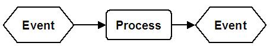
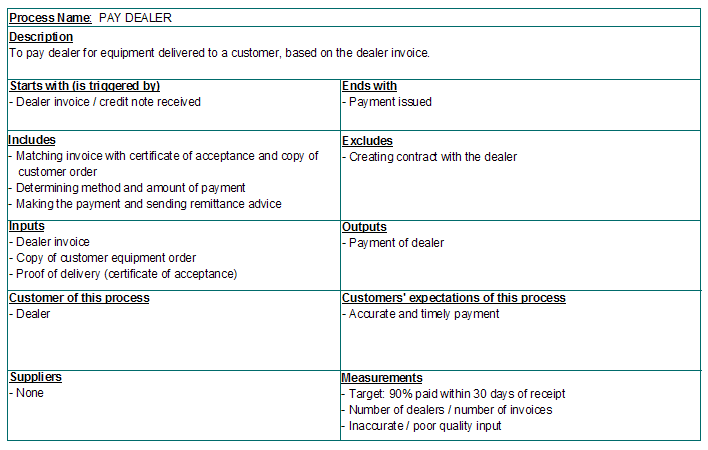
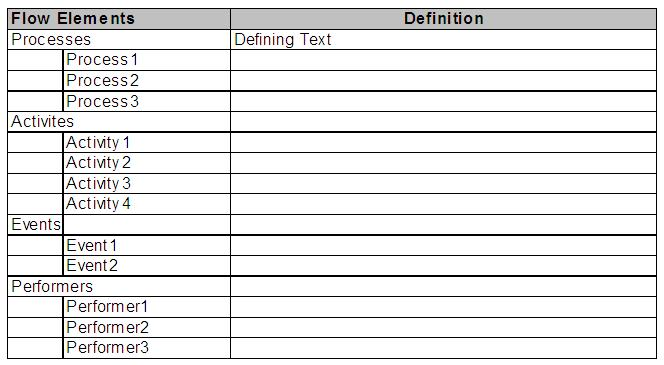
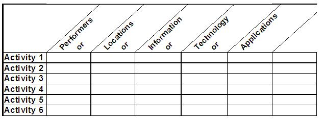
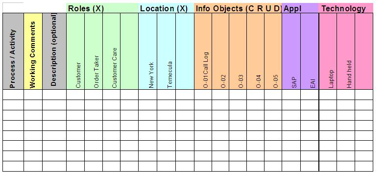
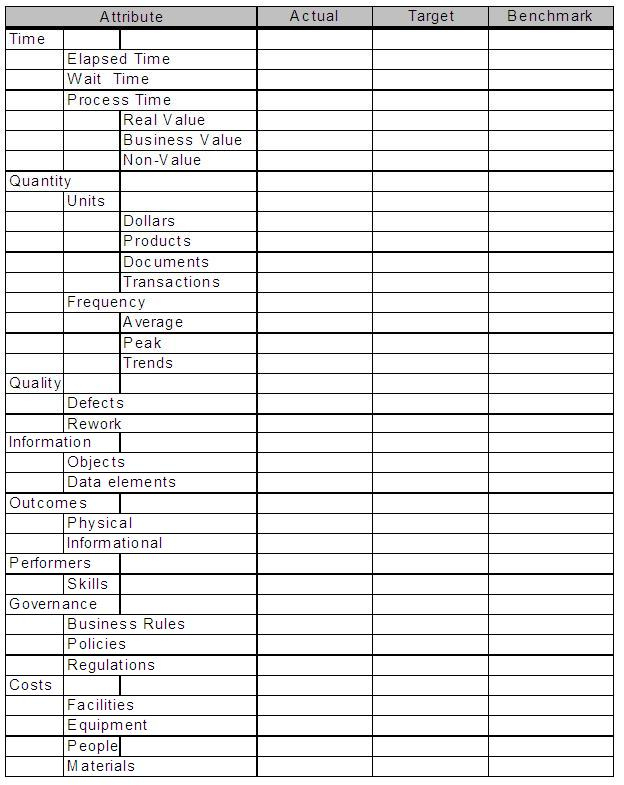
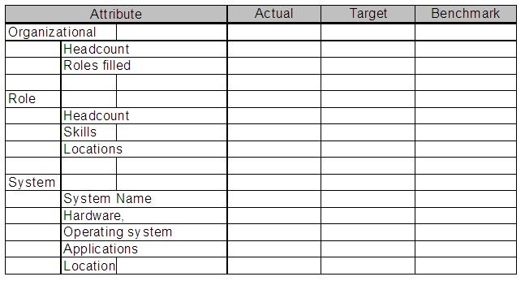
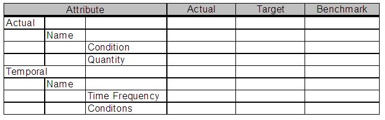

| Artifact: Process Definition (BUS 309) |
 |
|
The purpose of this work product is to provide an explicit rendering of how work is performed or will be performed within and across a business enterprise. Work is often perceived within narrow business functions and it is much more difficult to understand the interactions and dependencies across the enterprise. Workers tend to think in terms of their own department and their manager rather than the complete end-to-end customer centric view of the process. By modeling a business process flow, work is defined based on the process, not around functions, divisions, organizational units, geographical locations, or products. The level of detail shown in a process flow will differ depending on the engagement type and purpose. An initial process assessment or business strategy project may only require a high level definition of process throughout an entire enterprise. A project to implement a package solution in a specific process would require a more detailed process flow. In either case, there are several purposes this work product serves:
|
| Main Description | The Process Definition work product is used to define how a business operates or would like to operate. A Business Process is a series of related cross-functional Process Steps that takes an input, adds value to it, and produces an outcome. Business process definitions help describe activities and expected results and are used by businesses to improve their operations and performance. This Work Product may be used to define and describe current, baseline (possible), or future processes. It is developed on an iterative basis with increasing levels of detail from a high level to the activity/work step/IT level. This work product may be used with the process identification work product, which describes the "static" state of process definition, as opposed to the "dynamic" flow of process activities. The process identification work product would define "what" the processes are, and the Process Definition would show "how" the work is performed in terms of the flow of work. This Work Product is used in conjunction with process capability definition, process capability enabling definition and the future process/function attributes work products to define and capture the details about a process, its capabilities and its enablers. Process Flows are an effective means of communicating how work is performed in a time-based, cross-functional representation of the "business logic". It shows things such as responsibility or work, collaboration between performers, branches in the process flow, results of key decisions, synchronization points where wait states must be resolved for the process flow to continue, and related instances of work that are performed throughout the end to end process. |
|||||||||||||||||||||||||||||||||||||||||||||||||||||||||||||||
|---|---|---|---|---|---|---|---|---|---|---|---|---|---|---|---|---|---|---|---|---|---|---|---|---|---|---|---|---|---|---|---|---|---|---|---|---|---|---|---|---|---|---|---|---|---|---|---|---|---|---|---|---|---|---|---|---|---|---|---|---|---|---|---|---|
| Notation | Process Notation consists of three major elements: Process Flows, Process Narratives and Detail Process Descriptions (tables). Process Flows The basic process flow starts with some type of event, completes work and ends with another event. Time progresses from left to right. 
Process Description Notation The Process Definition work product will also include narratives, matrices, and tables describing the process in addition to the graphic representation of the process and activity flow. Narratives: Process narratives are plain text describing activities, groups of activities, or entire processes, depending on the level of the process flow diagram. The Process Definition Template that follows may be used to capture the narrative description of a process.  Another alternative for process narrative is as follows: A narrative description defines each Process/Activity flow and each of the Processes, Activities, Events, and Performers included in the flow supports.
 A common way to provide more detail of the process is in an activity matrix, which relates the activities to various relevant entities. Notation is a simple table. Enter activities in the left column and the specific instances of the object to which you are linking in the top row (i.e., locations, applications, roles, etc.).  Process Linkage Data Collection Spreadsheet Use the spreadsheet template to collect process linkages during the documentation process. Add additional columns as needed. Sort the processes/activities by linkage for analysis purposes. Once complete, use the spreadsheet to create the required matrices. Active Spreadsheet
 Process Attributes are used to complete the definition of a process. Several of the process model objects require additional information to complete their definition. There are generally two types of data, the actual and the target. The target represents the desired measurements and the actual represents what is currently being achieved. Tables best represent this data. Even if you automate these tables in some type of database, the representation does not change. The data at the different levels is very similar, and you can roll it up to higher levels of process classification. (These tables may be used at the process or activity level, for actual or target) Cycle Time Baseline or Target Metrics:
Defects Baseline or Target Metrics:
Productivity Baseline or Target Metrics: (Measurement of a unit of process work over a unit of process time)
Process Attributes Use Process/Activity attributes to complete the process definition. Several of the process model objects require additional information to complete their definition. There are generally two types of data, the actual and the target. The target represents the actual performance measurements. Tables best represent this data. Even if you automate these tables in some type of database, the representation does not change. The data at the different levels is very similar, and you can roll it up to higher levels of process classification.
You can also use this data to benchmark the processes at different levels.
 Performer Object
 Event Object
 |
| Templates | |
|---|---|
| Examples |
Modeling business processes has no value in itself. It provides the basis for understanding and analysis that can help clients identify opportunities to improve performance and operational effectiveness whether it’s through continuous improvement, re-engineering, repairing broken processes or transforming the business. The aim should be to help the client develop a process which:
Make sure you understand the level of change the client is looking for. There is a lot of confusion in terminology surrounding business process re-engineering. For example if the client says, "we want radical redesign starting from a “clean sheet" be sure you probe more to understand exactly what they mean. Do they mean to change the boundaries of the process (e.g., question whether work should be performed in-house or outsourced, if work is to be moved to suppliers or customers) or are they just talking about a fresh approach to the processes within the existing boundaries? Most clients cannot afford to completely throw away existing legacy systems and supporting processes.
Be aware that clients may have their own preferred definitions of terms and preferred approaches to various activities.
An understanding of their industry and business is invaluable, e.g., being familiar with business terms and acronyms in
common use. Speak in terms they understand and that have the same meaning to all involved in the
engagement. Many times a client will confuse departments and organization with processes.
Coming up with an optimal solution is one thing. The real tough part is gaining the buy-in from the client to not only accept the change, but feel they own that change. The steps in creating and developing the Process Definition, if done correctly, elicits this buy-in and provides a strong communication vehicle to foster sharing of knowledge. Be sure you have the best people to participate from the client organization in order to obtain accurate information. Their peers should respect them, as they will be called upon as change agents as the project progresses. Tips on Getting Started
Considerations in Process Modeling There are several techniques used in the actual building of the process flow. The detail descriptions of the various techniques are described in Technique Papers, some of which are currently under development. Spending half a day "walking" through processes in scope, preferably following the sequence of activities, saves a lot of time later, whereas it provides credibility during interviews and workshops as well. However, do the minimum amount of process modeling of the “current” environment" only sufficient to achieve the objectives of the engagement and provide a baseline from which to measure improvements and change. For processes classified as Basic or Industry Standard, design should be driven by the selected package's reference processes or by standard functionality of the selected technology enablers. This ensures that the design will exploit the best practices built in to many of today’s package applications. At the same time, capability and performance requirements need to be met. A useful approach is to create a “baseline” model, which is used as a starting point for process analysis. The approach to designing the “future” process will depend on the nature of the engagement. In many cases, this will involve implementation and integration of technology. The process model should define the automation and information components that are consistent with those defined in the application and architecture work products. |
| Impact of not having | If this work product is not produced, then:
|
|---|---|
| Reasons for not needing | There are few cases when this work product would not be required. Some may include:
In some cases, a package template including a process flow description has been provided as basis for the implementation. In this case, the work product may not have to be created, but would still be used. A detailed "current" process definition is not required when:
|
| Representation Options | Although approaches in creating a process flow diagram may differ, it is the intent to share common notation and terminology throughout the IBM in order to gain efficiencies in engagement delivery, and sharing of intellectual capital and resources. |
| Checklists | |
|---|---|
| Guidelines | |
| Supporting Materials | |
| Tool Mentors | |
| Estimation Considerations |
| © Copyright IBM Corp. 1987, 2012 All Rights Reserved Property of IBM These materials are intended only for use as part of an IBM engagement |